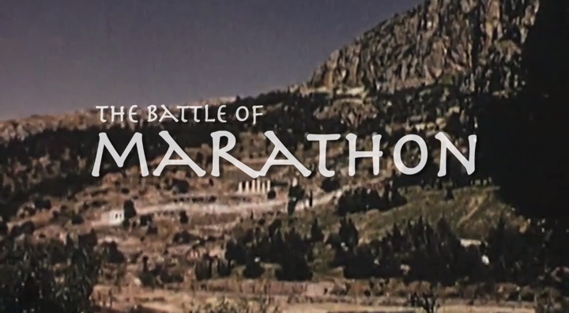
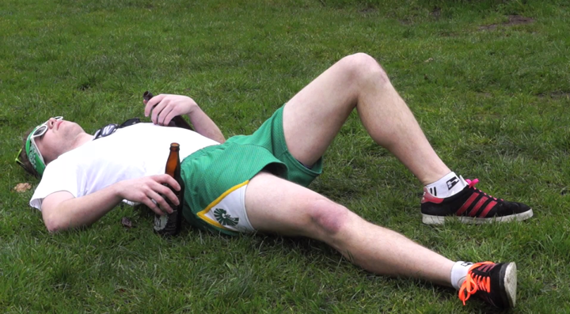
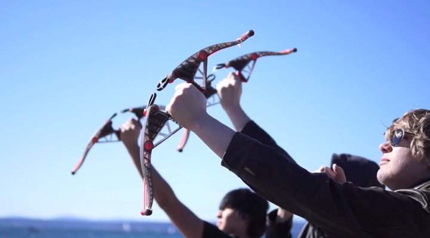
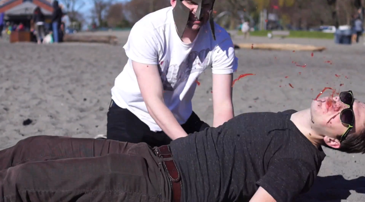
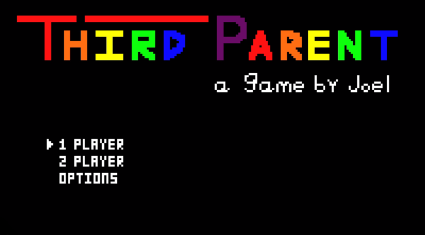
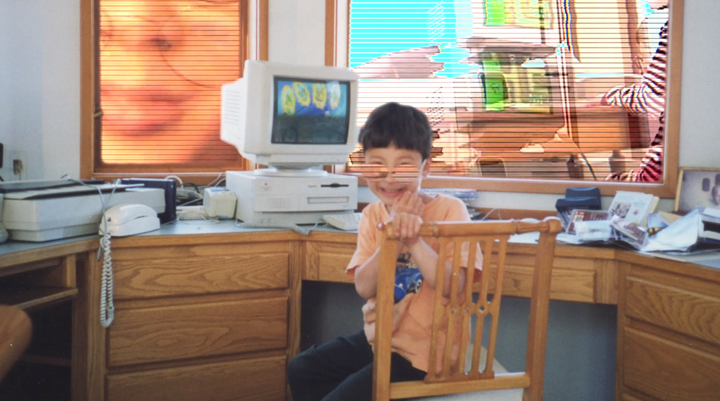
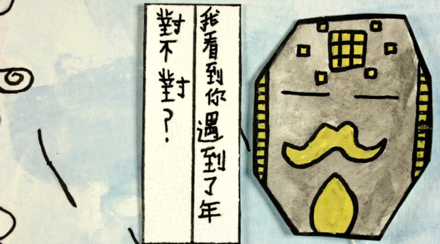
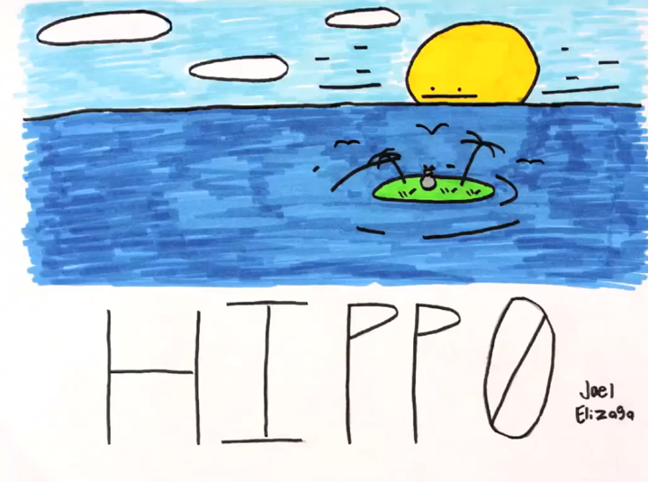
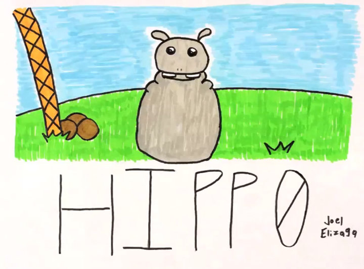

<h2>
	<i class="fa fa-film"></i>
	{{headline}}
</h2>

<h3>
	The Battle of Marathon Winter 2015
</h3>










<h3>
	Third Parent Winter 2014
</h3>







<h3>
	Chinese New Year Winter 2014
</h3>





<h3>
	Hippo Fall 2014
</h3>




